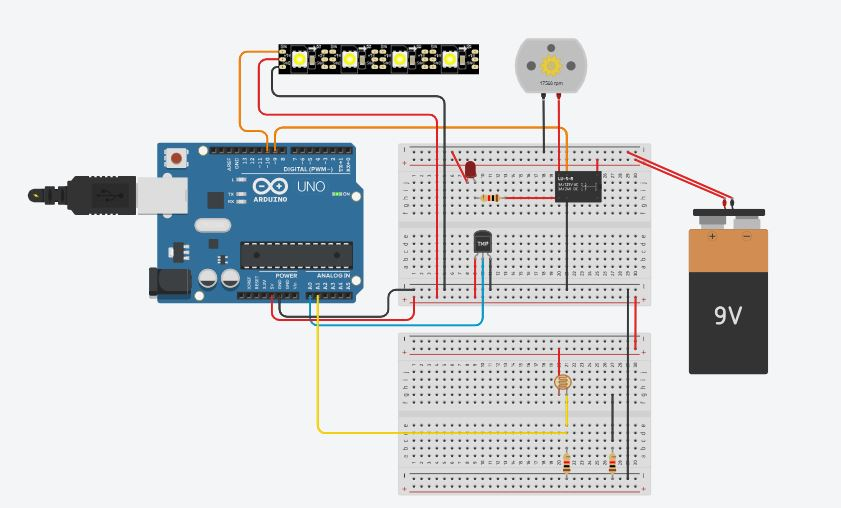

Inicio
El proyecto de Estaciones Públicas Renovables (EPR) busca renovar las estaciones de transporte público mediante el uso de energía renovable y tecnología innovadora. Invitamos a la comunidad a ser parte de esta transformación, ayudándonos a atacar esta problemática que afecta a miles de usuarios diariamente.

Proyecto
Descripción del Proyecto: EPR tiene como objetivo transformar las estaciones públicas de autobuses mediante el uso de paneles solares, sistemas de reciclaje de agua y áreas de descanso mejoradas, contribuyendo a la sostenibilidad y comodidad de los usuarios.
Objetivos:
- Reducir el impacto ambiental con estaciones que utilizan energías renovables.
- Mejorar la experiencia de los usuarios, ofreciendo espacios cómodos y seguros.
- Promover el uso del transporte público mediante estaciones más accesibles y atractivas.
Prototipos
En esta sección mostramos los prototipos de nuestras estaciones renovables.
